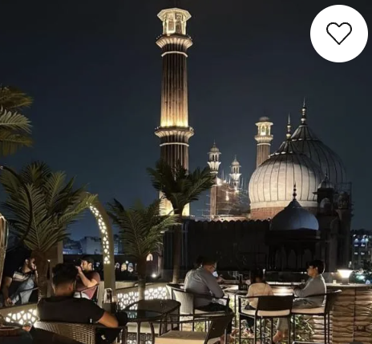

|

|
Book your stay
|
Jama Masjid, situata ad Agra, è una delle più grandi moschee dell'India,
costruita nel 1648 dall'imperatore Mughal Shah Jahan in onore di sua figlia Jahanara Begum.
Questa imponente moschea è un esempio splendido di architettura Mughal, caratterizzata da grandi cupole,
intricate decorazioni in arenaria rossa e marmi bianchi. Situata vicino al Forte di Agra,
Jama Masjid è un importante luogo di culto e un'attrazione storica che offre una finestra sulla grandiosità e la spiritualità dell'epoca Mughal.
|